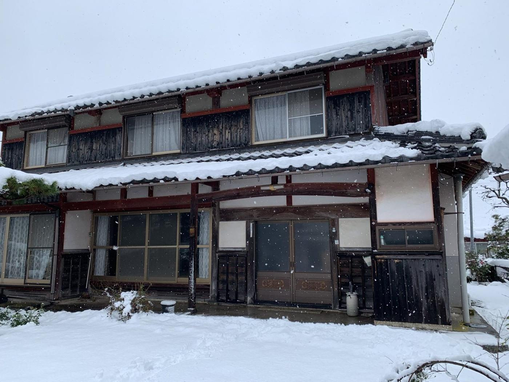
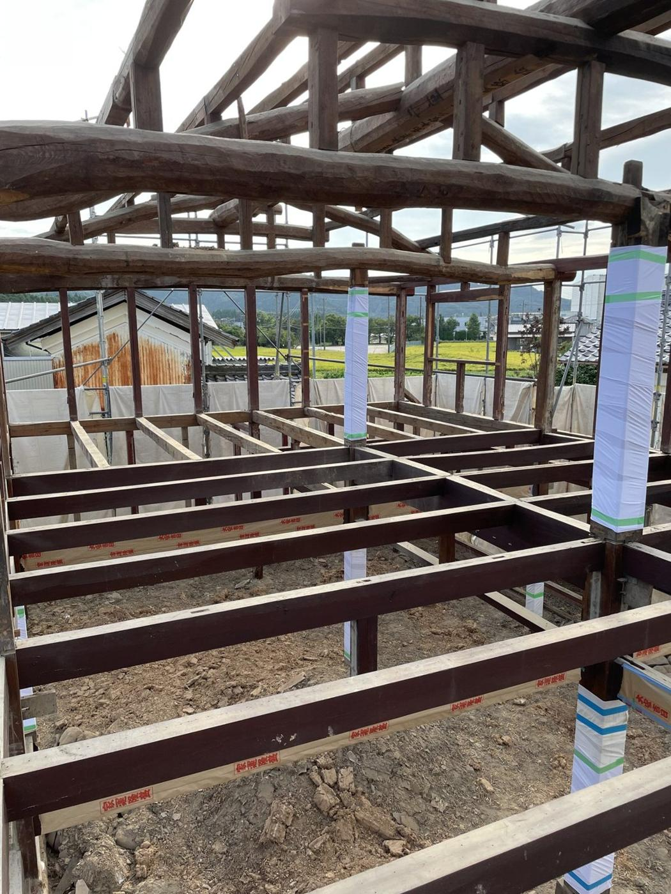
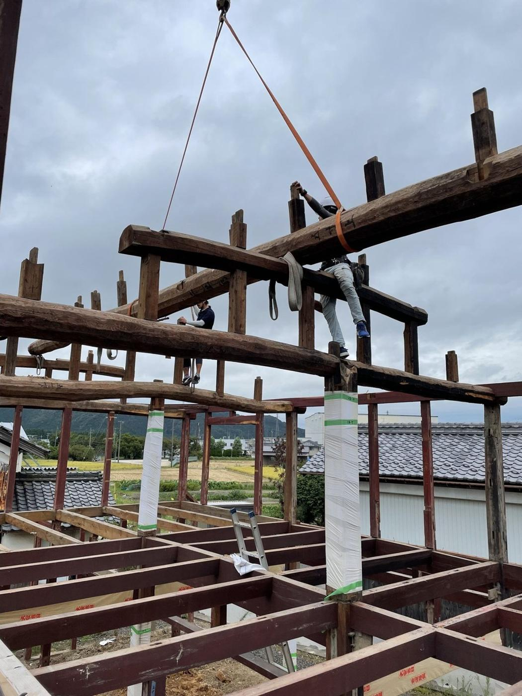
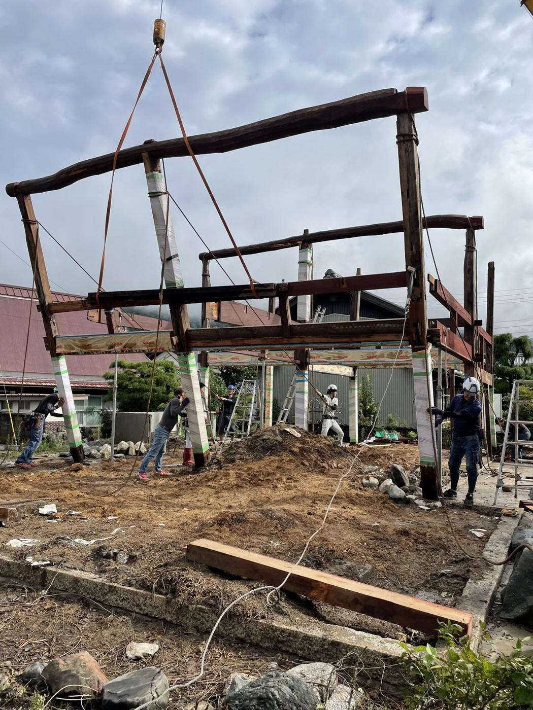
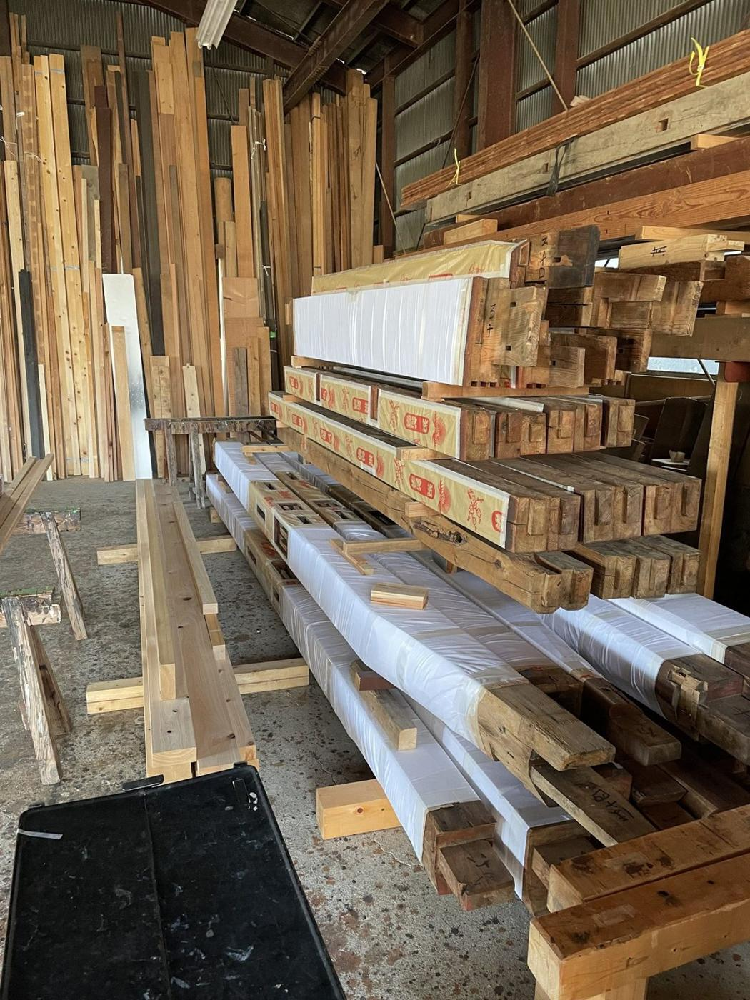
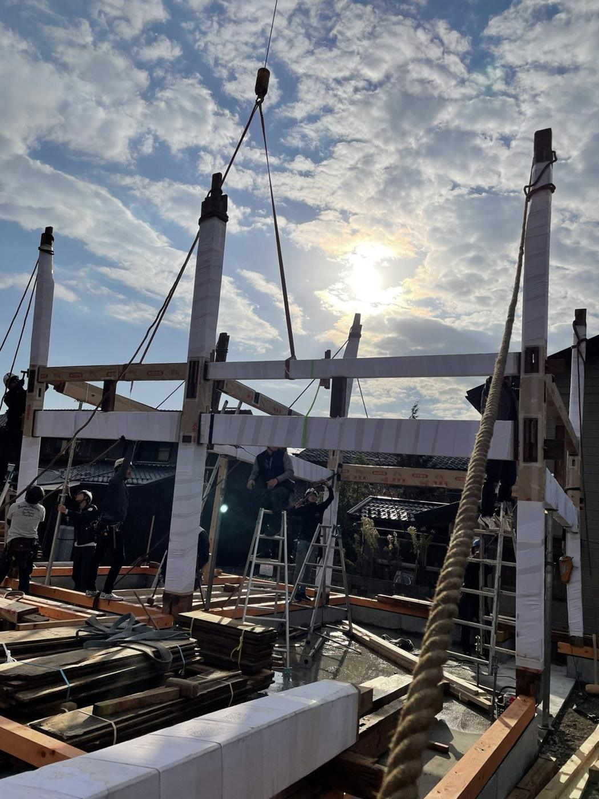
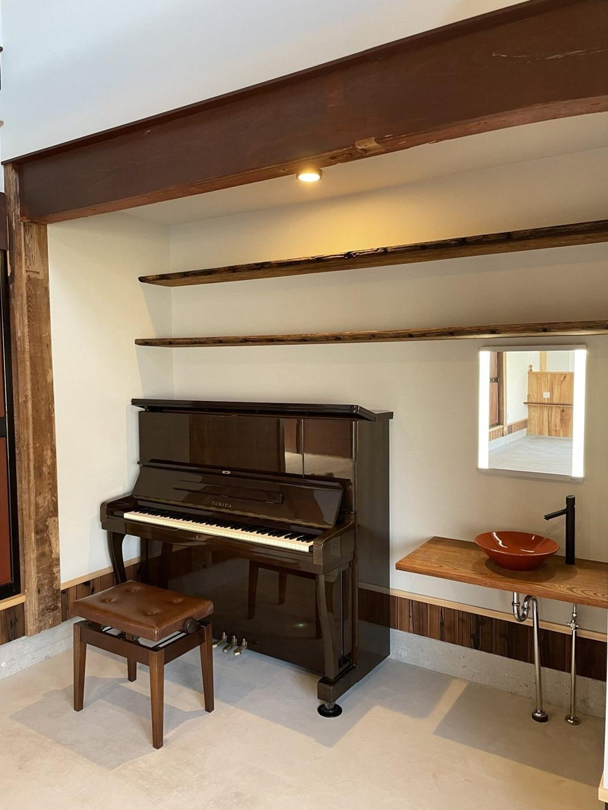

完成した姿だけでなく、工事の前と途中も載せています。どこを、どう直したのかが分かります。

小さな修理（建具・雨もれ・水まわり・和天井など）のビフォーアフターも、順に追加します。（写真が届いてから）
米原市から長浜市への移築の工程です。解体から古材の加工、建方まで、大工が手をかけています。

01 再生解体建物を解く
02 降棟棟を下ろす
03 組倒し骨組みを倒す
04 古材加工材を整える
05 建方新しい場所で組む
06 完成暮らしの場へ決まっていない所をなくしてから、契約します。あとからの「こんなはずでは」を、なくすための順番です。
三者に上下関係はなく、対等の立場だと考えています。施主様への報告やご説明は、すべて私たちがおこないます。 （山下さん確認）
所要30〜60分。お申し込みのあったお宅にだけ、うかがいます。
または、お電話で
0749-72-3908
平日 9:00〜17:00
勉強会の資料の年表を使用。公開してよいか・年の表記を山下さんに確認
〒526-0102 滋賀県長浜市落合町640番地2 TEL 0749-72-3908 FAX 0749-50-1081
業務内容：建築の設計・施工・管理／土地・建物の仲介／古民家鑑定・古材鑑定